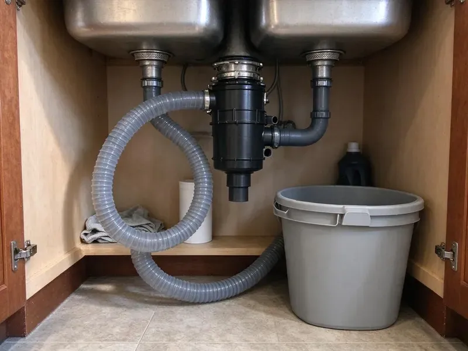
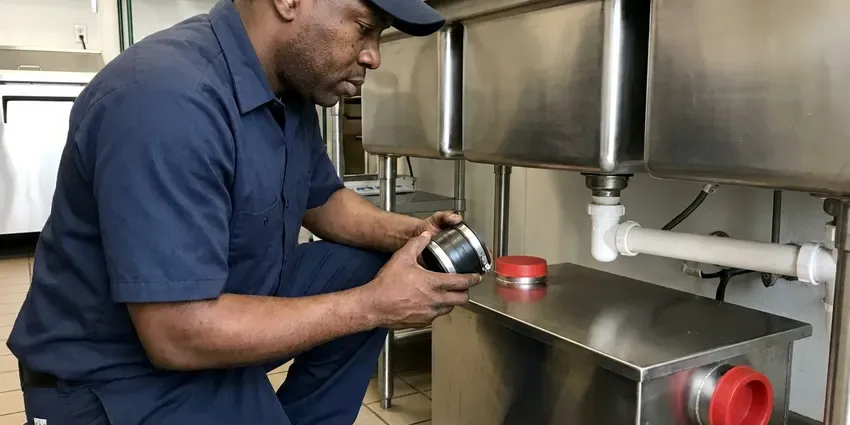

Grease Trap Cleaning in Maple Grove, MN
We clean grease traps across Maple Grove, MN outside your service hours, so the line keeps cooking.
- Prompt Scheduling
- Baffle and Tee Checks
- Bottom-to-Top Pump-Outs
- Backup Response

Book Grease Trap Cleaning in Maple Grove, MN
CNV Plumbing handles the pumping, the hauling and the paperwork.
Grease Trap Cleaning in Maple Grove, MN by CNV Plumbing
CNV Plumbing removes fats, oils, grease and food solids from traps of every size, then scrapes the walls and baffles with a long-handled scraper while the unit is empty. We also clear the inlet and outlet tees. A plugged outlet tee is the most common reason a freshly pumped trap still drains slow.
Our expertise includes:
- Full pump-outs of traps and interceptors
- Hydro-jetting of kitchen drain lines
- Licensed hauling and disposal of trap waste

Additional Kitchen Plumbing Services in Maple Grove, MN
Our kitchen plumbing services in Maple Grove, MN cover sinks, disposals, dishwashers, and grease traps so your kitchen keeps running without backups or leaks.




Grease Trap Installation near Maple Grove

Customers
Why Choose CNV Plumbing for Grease Trap Cleaning in Maple Grove, MN?
We pump the whole trap, not just the top layer. The settled food solids on the bottom eat up capacity just like the grease cap, and skimming leaves them behind. Then we scrape the walls and check the baffles.
- Prevent Blockages, Regular pumping keeps floor drains flowing during the dinner rush.
- Code Compliance, Most cities, Maple Grove included, set a pumping rule for food service kitchens, commonly based on 25 percent of depth, and inspectors check the log.
- Prevent Backups, Pumping on schedule keeps grease from slipping past the outlet and setting up in the line.
Citywide Coverage
We pump traps for bars and bakeries in every part of Maple Grove, from downtown blocks with alley access to suburban strip centers where the interceptor sits under a parking space. Tight access is routine for us. Long hose runs come on every truck for traps set far from the curb.
Experienced Team
Our techs have pumped enough traps to spot a cracked baffle by the way the grease cap sits. It shows in the details. They know that a cap floating unevenly usually means a baffle has broken loose, and that grease in the outlet chamber means the outlet tee is missing or plugged.
Safety-First Approach
Grease trap waste goes to a permitted receiving facility, never down a manhole or a storm drain. We log every load. That log links the gallons from your trap to the facility that took them, the same trail inspectors look for.
Trusted Certified Maple Grove Plumbing Services Professionals
At CNV Plumbing, we take pride in licensed, certified plumbing services throughout Maple Grove, MN. Those papers on the wall mean something. Our plumbers hold recognized industry credentials, and they follow strict safety and quality rules on every repair, installation and maintenance call we run.
Call Us Now PHCC Plumbing Contractor Recognition
PHCC Plumbing Contractor Recognition Better Business Bureau (BBB) Accreditation
Better Business Bureau (BBB) Accreditation Angi Certified Pro
Angi Certified Pro ISO 9001 Quality Management Certification
ISO 9001 Quality Management CertificationGrease Trap and Interceptor Cleaning in Maple Grove, MN
Grease Trap Pumping and Hauling in Maple Grove
Trap waste is regulated as a liquid waste, so in most places it has to be hauled by a licensed hauler to an approved receiving facility, not dumped down a manhole or into a dumpster. We do both the pumping and the hauling. Everything goes into a sealed tank on the truck, and each load is logged with the gallons and where it went. No barrels left behind.

Scheduled Grease Trap Maintenance in Maple Grove
Pumping frequency comes from two numbers: how big the trap is and how fast your kitchen fills it. We measure the second one with a sludge judge on the first few visits. From there we set a recurring date, and the truck shows up without you having to call the office and remind anyone. Schedules shift if your menu does.
Grease Trap Hydro-Jetting in Maple Grove, MN
Some traps have years of grease baked onto the walls and inlet piping. Pumping alone leaves that crust in place. We jet the inside of the empty trap and the line feeding it, which takes the unit back to bare walls and restores the capacity the crust was eating up. It adds about an hour.
Hydro-Jetting for Grease Lines in Maple Grove, MN
A cable machine pokes a hole through grease. A jetter takes it off the pipe wall. Our jetters run around 3,000 to 4,000 psi through a spinning nozzle, which scours the whole inside of the pipe and pushes the loosened grease downstream. A camera pass afterward shows whether the line is really clean.
Keeping Grease Trap Costs Down in Maple Grove, MN
Pricing comes down to trap size and how long it has been since the last pump-out, since a trap left for six months has a grease cap that must be broken up before it will pump. You get the price before any work starts. A steady interval keeps each visit short. Weekend emergency calls always run higher than a booked visit.
Emergency Grease Trap Cleaning in Maple Grove, MN
Sometimes the trap is fine and the problem is downstream. We find that out fast with a camera. If the trap is half empty but the floor sinks are still backing up, the clog is usually in the lateral between the interceptor and the city main, and that calls for jetting rather than another pump-out. We can jet on the same visit.
Under-Sink Grease Trap Maintenance in Maple Grove, MN
Under-sink hydromechanical traps are rated by flow, usually 10 to 50 gallons per minute, and they hold far less than people expect. In a busy kitchen, that means cleaning every week or two. We take the lid off, remove grease and solids, scrape the baffles, check the flow control fitting on the inlet, and replace the lid gasket if it is flattened or torn. Most odor from these units comes from a bad gasket.

Large Outdoor Grease Interceptor Cleaning in Maple Grove
Gravity interceptors in the parking lot often hold 750 to 2,000 gallons across two or three compartments. Each compartment gets pumped separately. A hard grease cap gets broken up with a pressure wand before pumping, otherwise it plugs the suction hose and half of it stays in the tank. No one goes inside without confined-space gear.
Local Grease Trap Cleaning in Maple Grove, MN
Nearby trucks mean a routine pump-out can fit in before the morning prep crew even clocks in, with the hose rolled up and the floor wiped by the time they arrive. No long drive is involved. Booking an early start is easy for us.
Our crews pump traps in strip-center pizza shops and hotel kitchens all over Maple Grove. We have seen most layouts. That means we usually know where the cleanout is, how much hose the job needs, and whether the interceptor lid will need a pry bar before we ever pull into the lot.
CNV Plumbing at a Glance
- Fully licensed plumbing team covering Maple Grove, MN
- Same-day appointments and 24/7 emergency response
- Clear written estimates, no hidden fees
- 4.8-star rated by 501+ Minnesota customers
Maple Grove Map
Maple Grove Information
- Population
- 71,288
- Area codes
- 763/952/612
- Service area
- Maple Grove and towns within a 40 mile drive
- Nearby
- Brooklyn Park, Plymouth, Coon Rapids, St. Louis Park
Cooking fat goes down a kitchen drain as a liquid and sets up like candle wax once it hits a cool pipe, so a trap pumped on schedule protects the line downstream. Water heaters and boilers work hard through the heating season, which adds wear compared to milder climates.
Expert Services
Call CNV Plumbing for honest, reliable plumbing from people who know the trade in Maple Grove, MN.
Our Specialized Plumbing Services in Maple Grove, MN
At CNV Plumbing, we handle the full list of plumbing services across Maple Grove, MN. From leak detection to full system installs, our team works fast and charges fair prices on homes and commercial properties alike. Here are the core services we offer:


The Grease Trap Cleaning Process in Maple Grove, MN
Start to finish, here is the order of work in Maple Grove, MN.
Request a Quote
Call (612) 712-9569 or use the form and tell us the trap size and where it sits. You get a price before anything is scheduled.
Depth Reading
The tech opens the lid and measures the grease and solids depth. That reading sets the pumping interval.
Full Pump-Out
We pump everything to the floor of the trap, then scrape the walls and baffles. A pressure wand loosens hard grease first.
Frequently Asked Questions About Grease Trap Cleaning in Maple Grove
Most visits in Maple Grove run somewhere between $200 and $800, set mostly by trap size and how long it has gone since the last pump-out. Access matters too. A trap behind a walk-in that needs 80 feet of hose costs more than one sitting next to the curb. You get the price first.
It is the most common pumping standard. Pump before grease and solids fill a quarter of the depth. Beyond that level, water passes through too quickly to separate, and grease leaves through the outlet even though the trap seems fine.
Slow sinks come first. Then gurgling floor drains and a sour smell near the dish area. Gray water rising through a floor sink means the trap is far past 25 percent and grease is already moving downstream.
The terms get mixed up constantly. Generally a trap is the small unit indoors, often under 100 gallons. An interceptor is the big in-ground tank outside, often 500 gallons or more, and plumbing codes treat them as separate categories with different sizing rules.
Under-sink traps take 30 to 60 minutes. Plan one to three hours for an outdoor interceptor. Big tanks with a hardened cap take the longest, since the cap has to be broken up with a pressure wand before the hose will pull it.
Grease passes the outlet and plugs the line. Then the backups start, and they tend to hit during the rush. Beyond the mess, many sewer districts fine kitchens for grease discharges and can bill them for jetting the public main, and a health inspector can close a kitchen with sewage on the floor.
Zurn, Schier, Watts and Big Dipper units turn up across Minnesota every week, along with Rockford traps and older steel boxes from makers that are long gone. We can usually find parts. For discontinued units we can often fit a universal baffle or flow control, or quote a replacement if the body has rusted through.
That is usually hydrogen sulfide from grease breaking down in an overdue trap. A worn lid gasket makes it worse. Pumping the trap, scraping the walls and replacing a flattened gasket fixes most cases, and if it comes back fast we check the vent and the floor drain traps nearby for dry seals.
What Our Customers Say About Our Plumbing Experts

Lisa C.
Water was pouring out from under the washing machine on a holiday weekend. CNV Plumbing talked me through closing the valves over the phone and had a plumber at the house within ninety minutes. It was a burst fill hose.
Emergency Plumbing · Coon Rapids, MN
Paul B.
Our pit pump ran nonstop even in dry weather. The plumber found the check valve was stuck open, so the same water kept cycling back into the pit. New valve, new float switch, done in an hour. It runs quiet now.
Sump Pump · Coon Rapids, MN
James P.
Our restaurant had a slow leak at the hand sink that was rotting the cabinet base. CNV Plumbing came in at six in the morning before prep, replaced the trap and both supply lines, and was packed up before my first cook clocked in.
Commercial Plumbing · Plymouth, MN
Monica A.
Our water bill nearly doubled in one month with no change in how we used water. The tech checked the meter, heard the leak under the hallway with his equipment, and opened a hole about a foot square. Fixed the same day.
Slab Leak Repair · Coon Rapids, MN
Tyler J.
We bought a taller comfort height toilet for my dad, who just had knee surgery. The plumber pulled the old one, found the flange was cracked, and replaced it before setting the new bowl. Took about two hours.
Toilet Installation · Minnetonka, MN
Karen W.
After our third pinhole leak in copper, we stopped patching. CNV Plumbing gave us a written plan room by room and repiped the house in PEX while we stayed in it. The crew covered our floors every morning and cleaned up every night.
Repiping · Maple Grove, MN